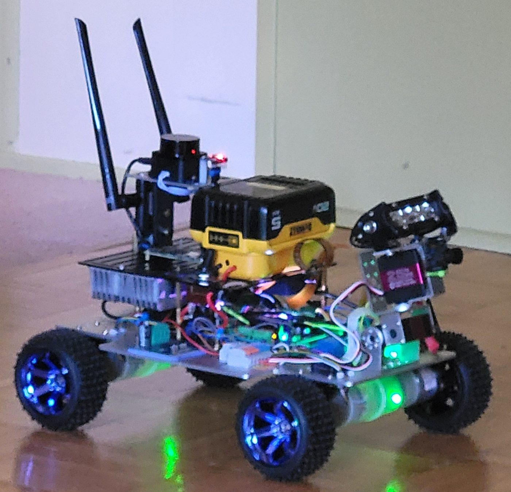
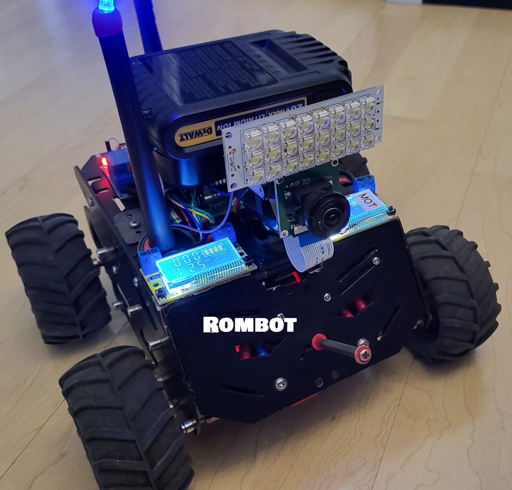
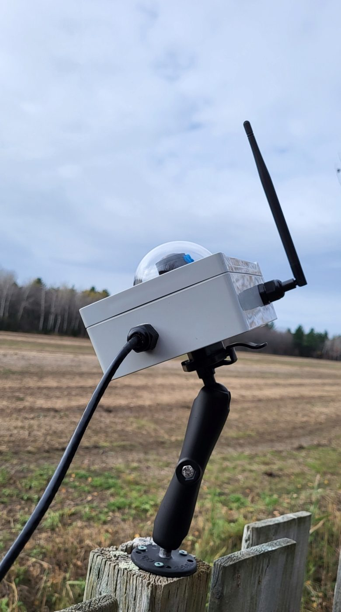
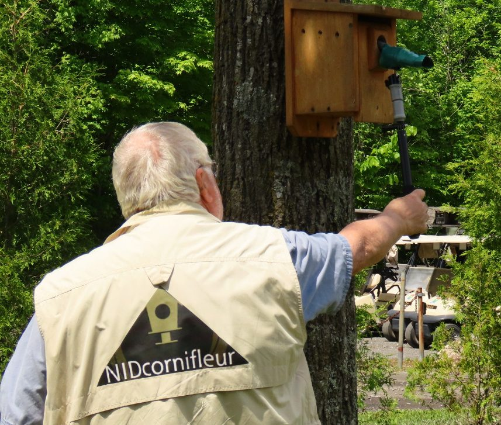
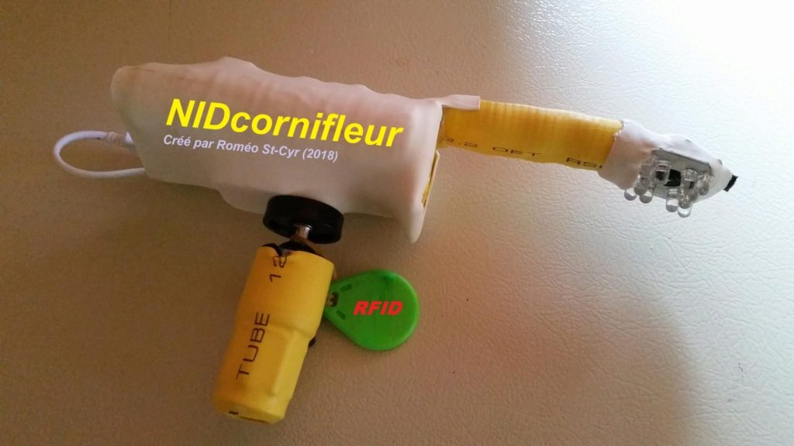

Des machines faites maison
Quatre projets conçus et assemblés par Roméo St-Cyr, à Saint-Jean-sur-Richelieu : deux robots d'inspection, une station d'observation du ciel et un appareil pour visiter les nichoirs.
Chaque projet est né d'un besoin réel. La méthode reste la même : observer le problème, fabriquer une solution, l'essayer sur le terrain, corriger et documenter.
-

Robot d'inspection téléopéré
RomBot2 (RB2)
Un robot à quatre roues qui explore les vides sanitaires et les espaces restreints à la place de l'opérateur, avec caméra orientable, LIDAR et conduite par page Web.
-

Premier robot d'inspection
RomBot
Le précurseur du RB2. En service depuis plusieurs années, il fonctionne toujours très bien.
-

Station d'observation du ciel
RjSky
Une caméra plein ciel sous dôme, installée au bout du terrain, qui photographie la voûte céleste et suit le passage de la Station spatiale internationale.
-

Inspection des nichoirs
NIDcornifleur
Une caméra au bout d'une perche télescopique qui regarde à l'intérieur d'un nichoir et l'identifie automatiquement par RFID. Un nichoir à la fois !
RomBot2 (RB2)
Un robot d'inspection téléopéré pour les endroits où il est pénible, ou impossible, de se déplacer à genoux.
Pourquoi ce robot
RomBot2 a été conçu pour inspecter les vides sanitaires, les dessous de bâtiments et d'autres espaces restreints sans que l'opérateur ait à y ramper sur de longues distances.
Il reprend l'esprit du premier RomBot et pousse le concept plus loin : motorisation améliorée, caméra orientable, LIDAR, centrale inertielle, Raspberry Pi 5, ESP32 et interface Web de conduite.
Ce qu'il fait
- Il transmet une image vidéo en direct.
- Sa caméra pan-tilt regarde à gauche, à droite, en haut et en bas sans déplacer le robot.
- Son LIDAR mesure les distances tout autour et dessine une carte des lieux.
- Il enregistre la trace de son parcours et peut la refaire à l'envers pour revenir.
- Il revient de lui-même vers son point de départ si le Wi-Fi est complètement perdu.
- Un capteur de distance pointé vers le haut mesure le dégagement sous les tuyaux.
- Un second capteur, pointé vers le sol, aide à repérer les fuites et les flaques d'eau.
- Il prend des photos et des vidéos pour documenter l'inspection.
- Il s'arrête immédiatement sur commande : le STOP et le jugement de l'opérateur passent avant tout.
Conduite
Le RB2 se conduit à partir d'une page Web, sur un ordinateur ou un téléphone. La page principale regroupe la conduite, l'image de la caméra et les commandes de sécurité. Une seconde page affiche le LIDAR, la carte et les traces.
Sur le terrain, le robot crée son propre réseau Wi-Fi. La méthode est celle de la prudence : avancer par petites séquences, s'arrêter pour observer, ne jamais forcer contre un obstacle.
Fiche technique
| Type | Robot mobile terrestre d'inspection, téléopéré |
|---|---|
| Ordinateur principal | Raspberry Pi 5, sous ROS 2 |
| Contrôleur | ESP32 (moteurs, pan-tilt, encodeurs) |
| Vision | Caméra sur Raspberry Pi Zero 2 W, support pan-tilt |
| Capteurs | LIDAR LD19, centrale inertielle BNO055, encodeurs de roues, capteurs de distance ToF VL53L5CX V2 (vers le haut) et VL53L1X (vers le sol) |
| Motorisation | 4 moteurs JGA25 avec encodeurs, 2 contrôleurs BTS7960 |
| Châssis | Aluminium, environ 22 × 32 cm |
| Alimentation | Batterie DeWalt 20 V, 5 Ah |
| Communication | Wi-Fi, avec point d'accès embarqué |
Philosophie
RomBot2 n'est pas un jouet. C'est une machine construite pour répondre à un besoin concret. Pas de magie, pas de promesses exagérées : du travail, des essais, de la patience et du bon sens.
État actuel
Le projet est pratiquement terminé. La conduite, la caméra, le LIDAR, la cartographie, les traces et le retour automatique fonctionnent. Les capteurs de distance ajoutés récemment sont en service.
Prochain ajout prévu : une caméra thermique.
RomBot
Le premier robot d'inspection, toujours en service après plusieurs années.
Le précurseur
RomBot est le robot qui a tout lancé. Construit pour aller voir dans les endroits bas et sombres à la place de son opérateur, il sert depuis plusieurs années et fonctionne toujours très bien.
C'est son usage sur le terrain qui a montré ce qu'un robot d'inspection devait offrir de plus, et qui a mené à la conception du RomBot2.
Fiche technique
| Type | Robot mobile d'inspection à quatre roues |
|---|---|
| Ordinateur | Raspberry Pi 4 |
| Vision | Caméra à grand angle, diffusée par RPi Cam Web Interface |
| Éclairage | Rampe de DEL à l'avant |
| Alimentation | Batterie DeWalt 20 V, avec afficheur de tension |
Code source
Le projet est public sur GitHub : github.com/NIDcornifleur/RomBot
RjSky
Une station personnelle d'observation du ciel, installée au bout du terrain.
Ce qu'elle fait
RjSky est une caméra plein ciel. Son objectif très grand angle, pointé vers le zénith, photographie toute la voûte céleste : étoiles, Lune, nuages et passages de satellites.
La station suit aussi la Station spatiale internationale et indique sa position dans le ciel.
Installation
La station est fixée sur un poteau, face à un champ, là où le ciel est le plus dégagé : les arbres empêchent une vue complète ailleurs sur le terrain. Elle est reliée à la maison par Wi-Fi.
Un système chauffant garde le dôme libre de rosée.
Fiche technique
| Type | Caméra plein ciel (AllSky) |
|---|---|
| Ordinateur | Raspberry Pi 4 B, 4 Go |
| Caméra | Raspberry Pi HQ |
| Objectif | Très grand angle Arducam, 1,56 mm |
| Logiciel | AllSky |
| Protection | Boîtier étanche, dôme transparent, chauffage anti-rosée |
| Communication | Wi-Fi |
NIDcornifleur
Une caméra au bout d'une perche pour voir dans un nichoir sans l'ouvrir ni grimper.
Le NIDcornifleur : un nichoir à la fois !

À quoi il sert
Le NIDcornifleur sert au recensement des nichées. Placé au bout d'une perche télescopique, il entre son museau dans l'ouverture du nichoir et filme l'intérieur. L'opérateur reste au sol, ce qui lui sauve du temps et lui évite les risques d'accident.
Il est utilisé chaque semaine au printemps, lors de la saison des nichées, par le Club d'ornithologie du Haut-Richelieu (COHR) ainsi que par quelques ornithologues amateurs. Le parcours du COHR compte plus de 200 nichoirs, notamment pour le suivi de l'Hirondelle bicolore.
Comment il fonctionne
- Chaque nichoir porte une pastille RFID sous son ouverture.
- En approchant, l'appareil lit la pastille et reconnaît le nichoir.
- Les lumières infrarouges s'allument et la caméra enregistre une vidéo d'environ 15 secondes.
- Le nom du nichoir, la date et l'heure sont inscrits dans la vidéo.
- L'appareil crée son propre réseau Wi-Fi : l'opérateur suit le tout sur son téléphone.
Au retour, les photos et vidéos se consultent à l'ordinateur pour remplir le rapport de sortie.
Fiche technique
| Ordinateur | Raspberry Pi Zero W |
|---|---|
| Caméra | Pi NoIR 8 MP, assez petite pour une ouverture de 1 po |
| Éclairage | Infrarouge |
| Identification | Lecteur RFID PN532 |
| Horloge | RTC DS1307 |
| Boîtier | Entièrement scellé sous gaine thermorétractable |
| Support | Perche télescopique |
Une famille d'appareils
Le premier exemplaire date de 2018. Environ dix appareils ont été construits depuis, en plusieurs variantes : l'éCOHRnifleur (deux exemplaires appartenant au COHR), l'écorNIDfleur et le MINIcornifleur, au museau allongé, conçu pour les nichoirs de troglodytes.
Une nouvelle génération est en préparation, avec une interface et un code entièrement refaits.
Code source
Les différentes versions sont sur GitHub : github.com/NIDcornifleur